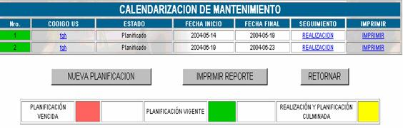

CRONOGRAMA
Como lo establece el manual de procedimientos de la empresa se debe realizar el mantenimiento de los equipos de forma planificada, la pantalla principal de esta opción se muestra a continuación

Donde:
Nro: especifica el número de calendario planificado
Codigo USI: especifica el código USI del recurso del cual se realiza la planificación de calendario.
Estado; en función de la fecha de la planificación se establece si el recurso se encuentra en estado de planificado o realizado.
Fecha de inicio; Se refiere a la fecha en la cual el recurso comenzará su mantenimiento planeado.
Fecha final; especifica la fecha en la cual el recurso terminará su mantenimiento.
Nueva planificación; la pantalla principal de esta opción se muestra a continuación.
Código;
escoja el código USI del recurso al cual se dará mantenimientoEstado;
como se está realizando la planificación en la fecha del sistema aparece Planificado, en el momento de la planificación, luego será realizado en el momento de la fecha prevista.Del – al;
se coloca las fechas de inicio y finalización del mantenimiento.Seguimiento; para realizar un seguimiento de realización presione un click en REALIZACIÓN y le aparecerá una pantalla donde usted confirmará la realización del mantenimiento.
Imprimir; si usted hace un click en la opción IMPRIMIR obtendrá un reporte completo del mantenimiento del recurso de forma externa.